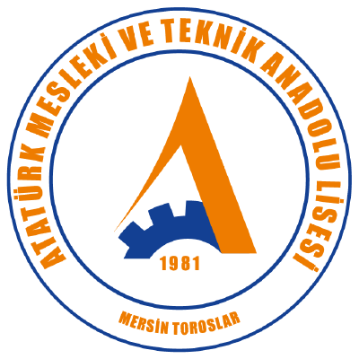

Mersin Atatürk Mesleki ve Teknik Anadolu Lisesi
Performans Yönergesi ve Çizelgesi Oluşturma
e-Okul sınıf listesini yükleyin, bilgileri doldurun, Word belgesini indirin. Sınıf listesi bilgisayarınızdan dışarı çıkmaz; hiçbir veri sunucuda tutulmaz (Gizlilik ve KVKK).
1Sınıf listesi
veya tıklayıp seçin
Önemli: e-Okul'da Sınıf Listesi raporunu dışa aktarırken biçim olarak "Excel (Sadece Veri)" seçin. Diğer Excel seçenekleriyle alınan dosyalar okunamayabilir.
Birden fazla şube için dosyaları birlikte ekleyebilirsiniz.
2Ders bilgileri
3Öğretmenler ve onay
Okul müdürünün adı belgeye yazılmaz; onay bölümünde elle yazılması için boş bırakılır.
4Konular ve sorular (isteğe bağlı)
Konuları burada girerseniz öğrencilere rastgele dağıtılır ve belgeye yazılır. Öğrenci sayısı kadar konu gerekmez; konu azsa her konu eşit sayıda öğrenciye verilir. Boş bırakırsanız tablolar Word'de doldurulmak üzere boş gelir.
Toplu ekle (listeyi yapıştır)
Dağılımı beğenmezseniz yeniden dağıtın. Word belgesine, ekranda gördüğünüz son dağılım yazılır (sınıf listesindeki "Konu" sütunu). Belgeyi indirdikten sonra yeniden dağıtırsanız kâğıtla uyuşmaz.
5Tutum ve davranış ölçeği
Hazır maddeleri olduğu gibi bırakabilir ya da dersinize göre değiştirebilirsiniz. Toplam puan 100'ü geçemez.
Görevin amacı ve güvenlik kuralları Word belgesinde boş gelir; onları Word'de yazarsınız. Dereceli puanlama anahtarı dolu gelir. Belgedeki her şeyi sonradan Word'de düzeltebilirsiniz.
Öğrenciler için örnek rapor
Öğrencilerinize raporun nasıl hazırlanacağını göstermek için paylaşabileceğiniz 6 sayfalık örnek rapor (PDF). Her bölümün başında o bölüme ne yazılacağı açıklanır; kapak, amaç, teorik bilgi, devre şeması, hesaplamalar, ölçüm tablosu, soruların cevapları, sonuç ve kaynakça örnekleri vardır.
Örnek, Analog-Dijital Elektronik Atölyesi dersinden bir uygulama konusudur (transistörlü su/yağmur algılayıcı); başka derslerde biçim örneği olarak kullanılabilir. Raporda öğrenci bilgisi yoktur ve her sayfasında "kendi raporunuzu el yazısıyla ve kendi cümlelerinizle hazırlayınız" uyarısı bulunur.
Gizlilik ve KVKK
Bu sayfa, 6698 sayılı Kişisel Verilerin Korunması Kanunu'na (KVKK) uygun olacak biçimde tasarlanmıştır: hiçbir kişisel veri sunucuya gönderilmez ve sunucuda tutulmaz.
- Sınıf listesi yalnız sizin bilgisayarınızda, tarayıcının içinde okunur. Öğrenci adı ve numarası internete çıkmaz.
- Öğrenci bilgileri tarayıcıda da saklanmaz; sayfayı kapattığınızda silinir.
- Tarayıcınızda yalnız form alanları hatırlanır: okul, ders, tarihler, öğretmen adları, konular ve tutum maddeleri. Bunlar da yalnız sizin cihazınızda durur.
- Sayfada çerez, reklam, izleme ya da istatistik aracı yoktur; üye girişi istenmez.
- Word belgesi tarayıcınızda üretilir ve doğrudan bilgisayarınıza iner.
Üretilen Word belgesi öğrenci adlarını içerir; belgenin saklanması ve paylaşılması onu indiren öğretmenin sorumluluğundadır. Sayfa GitHub Pages üzerinde barındırılır; GitHub, her web sitesinde olduğu gibi ziyaretin teknik kayıtlarını (IP adresi gibi) tutabilir. Bu kayıtlarda sınıf listesine ait hiçbir bilgi bulunmaz.
Hakkında
MetricusPrime, öğretmenlerin performans görevi belgelerini e-Okul sınıf listesinden birkaç dakikada hazırlaması için Mersin Atatürk Mesleki ve Teknik Anadolu Lisesi Elektrik-Elektronik Teknolojisi Alanı'nda geliştirildi.
- Üretilen belge: görev yönergesi, konu dağılım listesi, dereceli puanlama anahtarı, bireysel değerlendirme formu, sınıf değerlendirme çizelgesi ve tutum-davranış ölçeği.
- Ölçütler ve puanlar, alan zümresinin Performans Değerlendirme Ölçeği ile aynıdır.
- Kurulum gerekmez; internet olmadan da çalışır.
- Geliştiren
- Elektrik-Elektronik Teknolojisi Alanı
- Okul
- mersinataturkmtal.meb.k12.tr
- Kaynak kod
- github.com/Ataturk-MTAL/MetricusPrime
- Sorun bildirme
- GitHub üzerinden
- Kullanılan kütüphaneler
- SheetJS (Apache-2.0), docx (MIT)
- Sürüm
- 1.9 · Ekim 2026